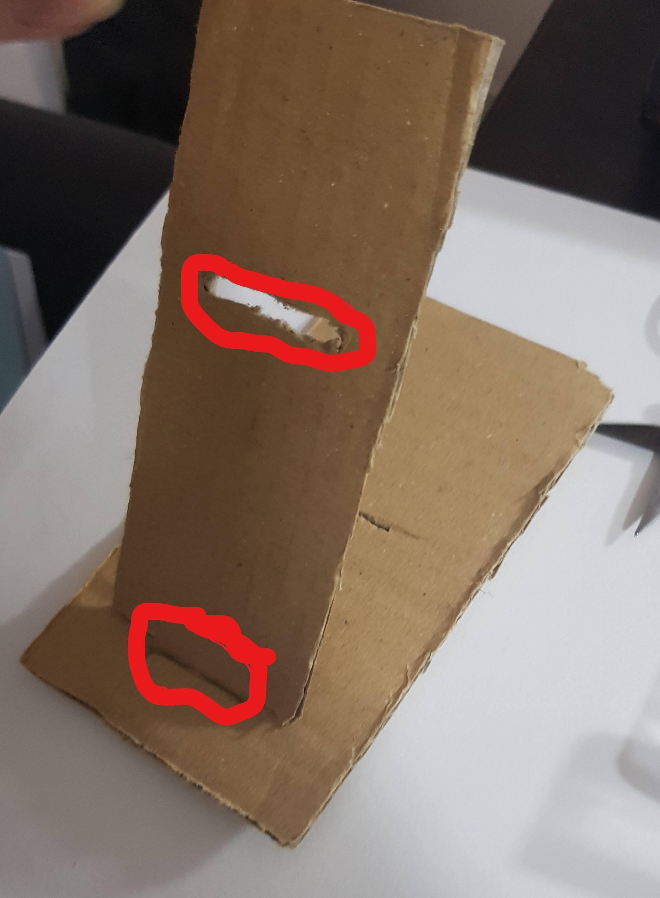
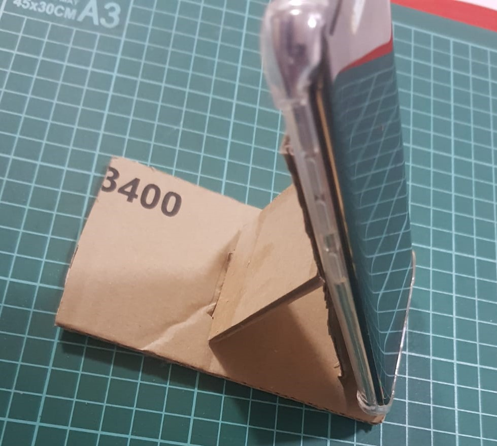
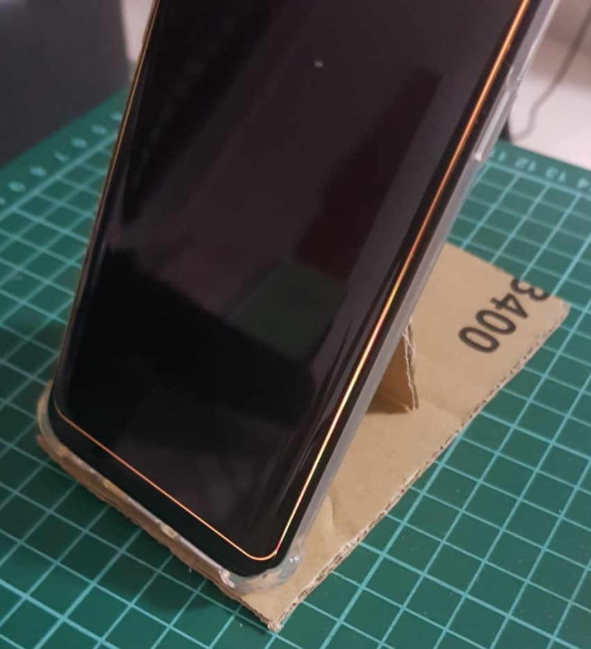
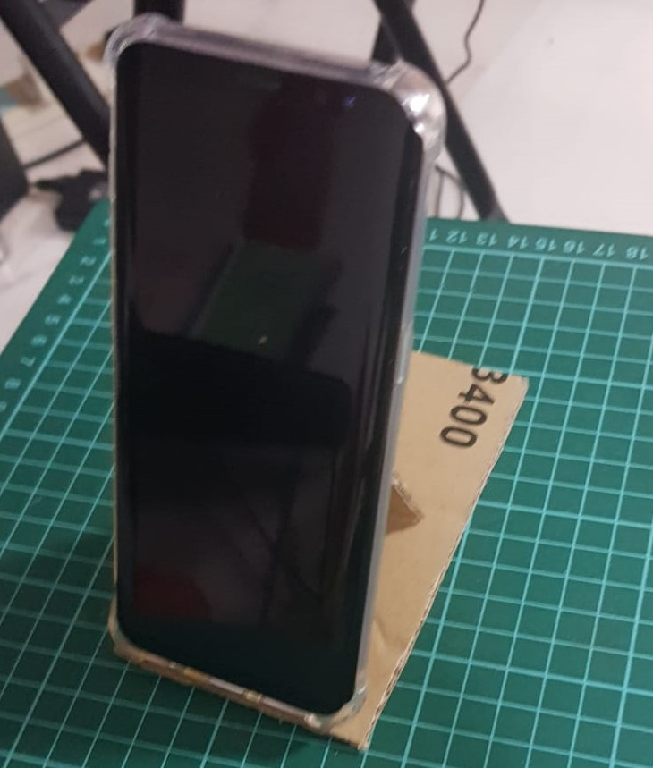

Assignment 2:prototyping
In this page, I will be describing how I made my prototype phone stand using cardboard.
From the word "prototype", the phone stand that I made will not be that aesthetic but rather a usable piece.
1st step
The first step is to sketch the model on a piece of paper. This is my sketch.
- try a rough sketch first before going to the final sketch
- make sure to label the length of your model
{kind=link}
2nd step
The second step is to cut out the pieces that you need
- Try to cut as close to the size you want as possible
- Try not to bend the cardboard too much as it may affect your build
{kind=link}
{kind=link}
3rd step
The third step is to make sure the pieces are able to fit into each other
- make sure that the pieces are close fit so that the pieces are not too loose
- If it is too big, cut some parts out for it to fit
- If it is too small, cut another piece of a bigger size
{kind=link}
4th step
The fourth step is to glue the pieces together (for the unmovable parts)
- I used hot glue instead of UHU glue
- Certain adhesives may not work on cardboard
- The parts I circled in red below are the parts I glued 
- Do find the strong part of the cardboard as they are needed to make sure that the product can support
- do not bend the cardboard as it will make it flimsy and may not work as a support
{kind=link}
Done
And this is the end of the guide on making a phone stand, do take your photos on the product you made and document it if you have to.
Below are pictures of my finished product
  {kind=link}
{kind=link}
{kind=link}